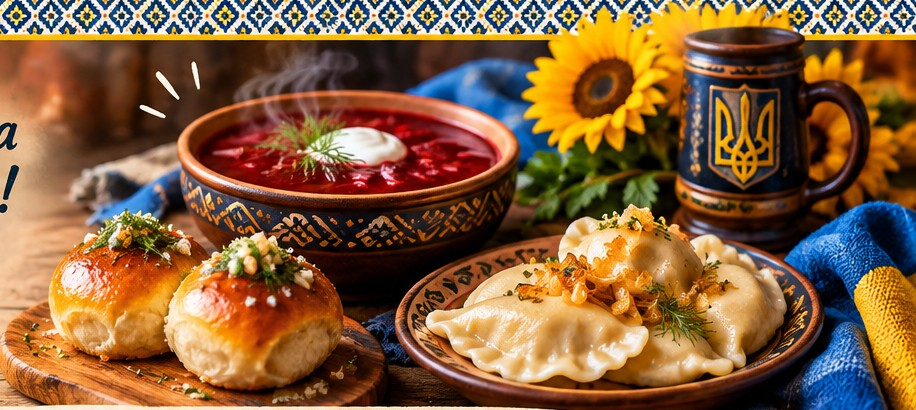

СМАК УКРАЇНИ У ВРОЦЛАВІ
Тут смакує
по-домашньому.
Борщ, вареники, пампушки та щира українська гостинність. Заходьте на обід, залишайтеся заради атмосфери.
★★★★★Тепло, щедро і з любов’ю до традицій

✦З любов’ю
з України
з України
Смачного!Бо найкращі розмови починаються за спільним столом.
ТРОХИ УКРАЇНИ — У СЕРЦІ ВРОЦЛАВА
Готуємо так, як для своїх.
Ukraińska Knajpa — місце, де можна видихнути, зустріти друзів і відчути смак дому. Ми зібрали улюблені страви української кухні та подаємо їх із тією самою щедрістю, з якою українці зустрічають гостей.
🥟Знайомі рецепти
💛Щира гостинність
🌻Український характер
ЗАВІТАЙТЕ ДО НАС
Чекаємо на вас у Вроцлаві
Приходьте на сімейний обід, вечерю з друзями або просто на тарілку гарячого борщу.
АдресаKotlarska 40, Wrocław
Телефон+48 660 003 265
БронюванняЗателефонуйте нам
ГостямЗавжди раді!